This analysis examines airline performance across four key categories. Select a section below to jump directly to that part of the page.
This section covers the first four questions of the analysis, all focused on operational reliability.
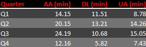
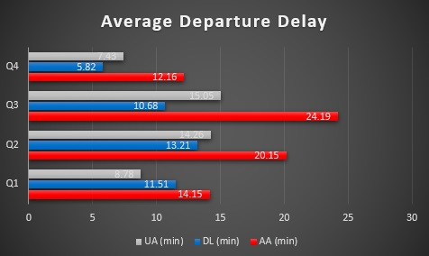
In Q1 2025, American Airlines averaged a departure delay of 14.15 minutes across 227,500 flights. Delta performed slightly better with an average delay of 11.51 minutes over 232,126 flights, while United led the group with the lowest delay of 8.78 minutes across 186,629 departures. These figures reflect operational efficiency during the winter months, with United showing strong performance in minimizing departure delays.
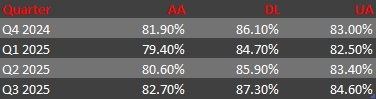
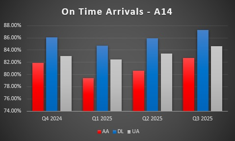
Delta consistently delivered the highest A14 on‑time arrival performance throughout the year, with the most stable results. United stayed in the middle with moderate swings, while American trailed with lower and more variable arrival reliability. Seasonal dips affected all three, but Delta recovered fastest and maintained the strongest overall arrival performance.
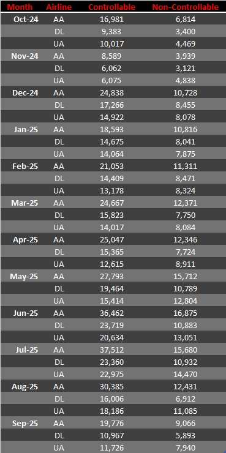
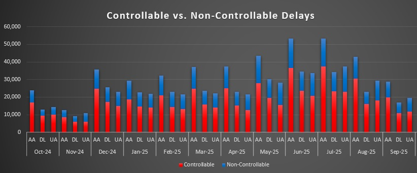
Delta generally reports fewer controllable delays, United falls in the middle, and American shows higher controllable volumes, but each carrier experiences similar seasonal swings in non‑controllable delays. The overall pattern suggests that while operational practices differ, external factors affect all three airlines in comparable ways throughout the year.
[Your chart and explanation will go here]
This section analyzes the financial performance of each airline, comparing operational costs, operational revenue, and overall profitability.
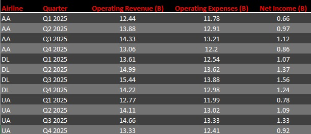
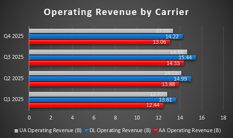
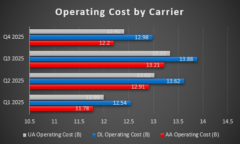
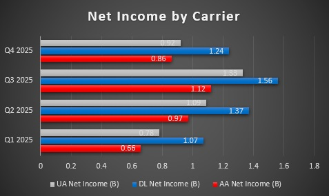
American, Delta, and United all follow the same seasonal financial rhythm, but each carrier moves through it a little differently. American’s revenue rises during peak travel months, but higher operating costs often narrow its margins. Delta shows steadier revenue growth with costs that track closely behind, creating more predictable swings in profitability. United experiences noticeable shifts in both revenue and expenses, leading to wider month‑to‑month changes in net income. Together, the charts show that while all three airlines respond to the same industry cycles, each carrier’s financial pattern reflects its own cost structure and operational strategy.
This section examines seasonal passenger volume patterns to identify which airlines gain momentum during peak travel months.
[Your chart and explanation will go here]
This section covers the first four questions of the analysis, all focused on operational reliability.
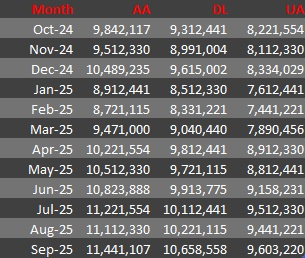
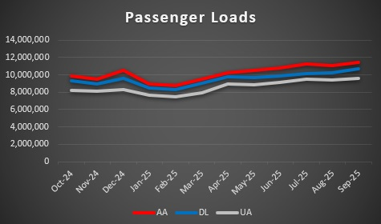
Passenger volumes rise sharply during the traditional peak travel periods, with the strongest increases appearing in June, July, and December. All three airlines show this same seasonal pattern, but each carrier reaches its highest passenger totals at slightly different points. American generally carries the largest number of passengers during the summer peak, while Delta and United follow similar seasonal curves with slightly lower totals. The equal baseline across the chart reflects the consistent level of frequent‑flyer and loyalty‑driven travel, which remains steady throughout the year regardless of season. Overall, the data shows that while all three airlines benefit from peak‑season demand, American tends to lead in total passenger volume during the busiest months.